방송통신기사 (2004-08-08 기출문제)
1과목: 디지털 전자회로
1. 그림과 같은 CR회로에서 지수 함수적으로 증가하는 경우는 어느 것인가?
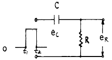
- t1에서의 ec
- t1에서의 eR
- t2에서의 ec
- t2에서의 eR + ec
(정답률: 알수없음)

2. 다음과 같은 정보신호를 진폭변조할 때 가장 넓은 대역의 스펙트럼 분포를 차지하게 되는 것은?
- 1[kHz]의 정현파
- 1[kHz]의 펄스파
- 5[kHz]의 정현파
- 5[kHz]의 펄스파
(정답률: 알수없음)
3. 이미터 폴로워(emitter follower)의 특징을 설명한 것 중 옳지 않은 것은?
- 전압이득은 1 에 가깝다.
- 전류이득은 1 보다 크다.
- 전력증폭에 적합하다.
- 입력임피던스가 크고 출력임피던스는 작다.
(정답률: 알수없음)
4. 그림과 같이 연산증폭기를 사용한 위인(Wien)브리지에서 이 발진회로의 발진주파수 f는?
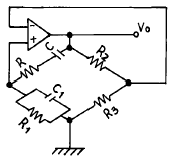
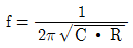
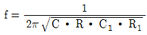
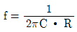
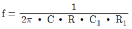
(정답률: 알수없음)
5. RS 플립-플롭 논리회로의 설명으로 틀린 것은?
- 2개의 입력 R, S와 2개의 출력 Q,
 를 갖는다.
를 갖는다. - 입력 R, S가 저레벨일 때 출력 Q,
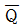
는 전상태를 유지한다. - S가 고레벨일 때 Q,
 가 모두 저레벨로 된다.
가 모두 저레벨로 된다. - R과 S가 같이 고레벨이면 출력은 불확정이다.
(정답률: 알수없음)
6. 플립플롭회로를 활용할 수 없는 것은?
- 주파수분할기
- 주파수체배기
- 2진계수기
- 기억소자
(정답률: 알수없음)
7. 집적회로(IC)에서 고주파 특성을 제한하는 요인은?
- 저항
- 다이오드
- 기생 커패시턴스
- 실리콘
(정답률: 알수없음)
8. 다음 단일 구형파를 미분회로에 통과시키면 출력파형은?
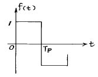
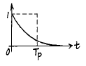
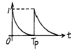
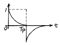
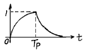
(정답률: 알수없음)
9. 다음 회로에서 그림과 같은 입력파에 대해 출력파형은? (단, 다이오드 D1, D2와 연산증폭기는 이상적이다.)
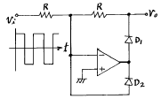
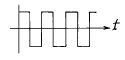
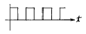
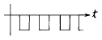
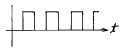
(정답률: 알수없음)
10. 45[㎒]의 반송파를 최대 주파수편이 38[㎑]로 하고, 9[㎑]의 신호파로 주파수 변조를 했을 경우 주파수 대역은?
- 47[㎑]
- 94[㎑]
- 38[㎑]
- 9[㎑]
(정답률: 알수없음)
11. 비동기식 계수기(counter)와 관계가 없는 것은?
- 리플 카운터라고도 하다.
- 동작속도가 느리다.
- 전단의 출력이 다음 단의 입력이 된다.
- 동작속도가 고속이다.
(정답률: 알수없음)
12. 에미터 저항을 가진 CE 증폭기의 특징에 관한 설명 중 옳지 않은 것은?
- 전류이득의 변화가 거의 없다.
- 입력저항이 증대된다.
- 출력저항이 증대된다.
- 전압이득이 크게 된다.
(정답률: 알수없음)
13. exclusive-OR와 exclusive-NOR에 해당하는 논리식을 상호 변환한 아래의 식 중에서 틀린 것은?
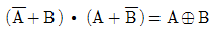
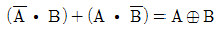
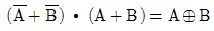
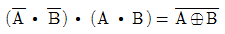
(정답률: 알수없음)
14. 이상적인 연산증폭기의 조건중 옳지 못한 것은?
- 전압이득이 무한대
- 입력저항이 무한대
- 출력저항이 무한대
- 밴드폭이 무한대
(정답률: 알수없음)
15. PM파와 FM파의 스펙트럼 분포의 관계 중 틀린 것은?
- PM파와 FM파의 스펙트럼은 반송파를 중심으로 해서 위, 아래로 변조 주파수 간격으로 무한히 발생한다.
- PM파의 변조지수 mp는 위상편이량 Δø와 같으므로 변조 신호전압에 역비례 한다.
- PM파에서나 FM파에서 변조 신호전압을 높게 하면 대역폭은 넓게 된다.
- 변조주파수를 높게 하면 PM에서는 대역폭이 비례하여 커진다.
(정답률: 알수없음)
16. 아래 반전증폭회로의 출력전압은 얼마인가? (단, 연산증폭기의 개방이득은 ∞라고 본다.)
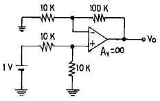
- 5.5[V]
- 10.5[V]
- 11[V]
- 21[V]
(정답률: 알수없음)
17. 다음 회로의 출력은?
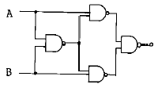
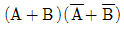
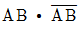
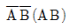
- AB
(정답률: 알수없음)
18. 1,024개의 입력 펄스가 들어올 때마다 한 개의 출력 펄스를 발생시키려고 한다. T플립플롭을 이용할 경우 몇 개가 필요한가?
- 4개
- 6개
- 8개
- 10개
(정답률: 알수없음)
19. 그림과 같은 반파정류회로의 동작 설명과 관련이 없는 것은?
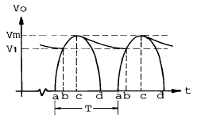
- 평활콘덴서에 충전전류가 흐르는 기간은 파형의 bc 기간 동안이다.
- 리플전압의 피크투피크(p-p) 값은 Vm-V1 이다.
- 입력교류 주기는 T 이며, 리플주기와 같다.
- 출력직류 전압의 평균값은 V1 이 되며, 이 값은 부하에 비례한다.
(정답률: 알수없음)
20. 로가리즘 앰프(logarithm amp)는 어느 것인가? (단, OP amp는 이상적으로 간주한다.)
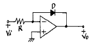
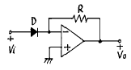
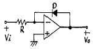
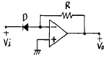
(정답률: 알수없음)
2과목: 방송통신 기기
21. 다음 중 케이블 TV 시스템에 사용되는 측정기와 관계가 없는 것은?
- 다주파 신호 발생기(multiple frequency signal generator)
- 왜곡 분석기(distortion analyzer)
- 함수발생기(function generator)
- 휴대용 상향 신호 발생기(reverse test signal generator)
(정답률: 알수없음)
22. 소형 TV카메라와 소형 VTR 또는 VTR일체형 TV카메라를 이용한 취재방법으로 기동성을 중시하는 야외 보도 취재방법은?
- EFP (Electronic Field Production)
- ENG (Electronic News Gathering)
- SNG (Satellite News Gathering)
- FPU (Field Pick-up Unit)
(정답률: 알수없음)
23. TV방송에서 비월주사를 하는 이유는?
- 수평 주사선수를 줄이기 위하여
- 주파수 대역폭을 늘리기 위하여
- 깜박거림(flicker)을 줄이기 위하여
- 콘트라스트를 좋게 하기 위하여
(정답률: 알수없음)
24. 방송 통신에 있어서 변조의 목적이 아닌 것은?
- 전자파 송수신에 필요한 안테나의 크기를 줄이기 위해서이다.
- 하나의 통신로에 여러 신호를 동시에 전송할 수 있게하기 위해서 이다.
- 파장이 짧은 고주파 신호를 이용하여 변조하게 되면 사용되는 부품이 소형화되어 장비가 소형화되고 경량화되는 장점이 있다.
- 송신기와 수신기의 구조가 간단히 하기 위해서이다.
(정답률: 알수없음)
25. 다음 중 MPEG-1의 기능에 HDTV의 품질을 제공하는 압축방식은?
- MPEG-2
- MPEG-3
- MPEG-4
- MPEG-7
(정답률: 알수없음)
26. 다음 중 정지위성을 설명한 것 중 맞지 않는 것은?
- 적도위 약 36,000km의 원궤도에 띄운 위성이다.
- 정지위성이 지구를 포함하는 각도는 17.34도이고 그 통신반경은 약 76도이다.
- 정지위성 한개는 지구표면의 42.4%를 감당할 수 있다.
- 정지위성 3개는 극지역을 포함한 지구상의 어느 지점과도 통신이 가능하다.
(정답률: 알수없음)
27. 다음 중 음성다중 방식의 종류에 속하지 않는 것은?
- AM-FM방식
- FM-FM방식
- FM-PM방식
- 2-Carrier방식
(정답률: 알수없음)
28. NTSC 컬러 TV방송에서 사용되는 색 부 반송주파수는 얼마인가?
- 3.58MHz
- 3.28MHz
- 3.15MHz
- 3.68MHz
(정답률: 알수없음)
29. "TV 편집 녹화기는 테이프가 헤드에 의하여 돌아가므로 테이프의 속도가 변화하여 오류를 발생하게 되는데 이것을 방지하기 위하여 ( )를 사용한다." ( )에 알맞은것은?
- ENG(electronic news gathering)
- UPS(uninterruptible power system)
- IRC(incrementaly related carrier)
- TBC(time base corrector)
(정답률: 알수없음)
30. 트랜스와 앰프 등 비 직선성에 의하여 입력신호의 주파수이외에 불필요한 정수배 주파수의 신호가 발생되는 현상을 무엇이라고 하는가?
- 고조파 왜곡 (harmonic distortion)
- 저주파 왜곡 (audio distortion)
- 고주파 왜곡 (radio frequency distortion)
- 고조파 발진 (harmonic oscillation)
(정답률: 알수없음)
31. 다음중 루미넌스 진폭의 변화가 크로미넌스의 위상을 변화시키는 현상은 어느 것인가?ㅎ
- 미분 이득
- 미분 위상
- 그룹지연
- 미분 루미넌스
(정답률: 알수없음)
32. 화상의 분해와 조립을 주사(scanning)라고 하는데 다음 중 TV수상기의 주사방식이 아닌 것은?
- 수평주사
- 수직주사
- 비월주사
- 동기주사
(정답률: 알수없음)
33. 다음 그림과 같은 위성방송 수신 안테나의 명칭은?
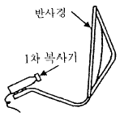
- 혼 반사 안테나(horn refector antenna)
- 카세그레인 안테나(cassegrain antenna)
- 오프세트 파라볼라 안테나(offset parabola antenna)
- 그레고리언 안테나(gregorian antenna)
(정답률: 알수없음)
34. 다음 중 진폭대 주파수 응답, 과도현상, 포락선 지연 및 위상 등의 판독이 가능한 테스트 신호는 어느 것인가?
- sine-squared test signal
- vertical interval signal
- window signal
- monoburst signal
(정답률: 알수없음)
35. TV방송 화면에 영상시보인 월, 일, 시, 분, 초를 디스플레이 하기 위한 장치로 알맞은 것은?
- Logo Generator
- Time Super Generator
- Capture System
- Character Generator
(정답률: 알수없음)
36. 한쪽의 금속판은 고정시키고 또 한쪽의 금속판은 음압의 변동에 따라 진동하도록 만든 마이크는?
- 콘덴서형 마이크
- 무빙코일형 마이크
- 리본형 마이크
- 다이나믹형 마이크
(정답률: 알수없음)
37. 인터넷 방송 시스템의 하드웨어(hardware) 구성 요소가 아닌 것은?
- 방송영상 장비
- 네트워크 장비
- 헤드엔드 장비
- 서버
(정답률: 알수없음)
38. 다음 중 OFDM(Orthogonal Frequency Division Multiplexing)방식의 설명이 잘못된 것은?
- 멀티캐리어 변조방식의 일종이다.
- 지상계 디지털 TV방송이나 디지털 음성방송에 적합한 변조방식이다.
- 송신신호는 다수의 아날로그 변조파를 더해 합친 것이다.
- FFT(Fast Fourier Transform)에 의한 변복조처리가 가능하다.
(정답률: 알수없음)
39. 다음중 비디오 조명의 조건으로 틀린 것은?
- 밝기가 충분할 것
- 플리커(flicker)가 있을 것
- 조명의 효율이 좋을 것
- 연출의도에 따라 상황이나 분위기를 만들어 낼 것
(정답률: 알수없음)
40. 다음 중 위성방송기기의 구성요소가 아닌 것은?
- 저 잡음 증폭기(LNA: Low Noise Amplifier)
- 주파수 변환기(DC: Down Converter)
- 수신신호의 편파분리기(OMT: Orthogonal Mode Transducer)
- 고 잡음 증폭기(HNA: High Noise Amplifier)
(정답률: 알수없음)
3과목: 방송미디어 공학
41. 다음 중 미디어의 종류가 아닌 것은?
- 뉴 미디어(new media)
- 멀티 미디어(multimedia)
- 매스 미디어(mass media)
- 시간 미디어(time media)
(정답률: 알수없음)
42. 다음 중 원래의 신호를 어느 정도 정확하게 재생시키느냐의 능력을 표시하며 주파수특성, 고조파, 검파, 위상, 전신 등의 왜곡 및 잡음을 결정하는 것을 나타내는 것은?
- 충실도
- 선택도
- 감도
- 실용도
(정답률: 알수없음)
43. 라디오 방송의 특성이 아닌 것은?
- 친숙한 생활 매체이다.
- 지역성이 강하다.
- 기록성이 강하고 전달성이 약하다.
- 단방향성이다.
(정답률: 알수없음)
44. 다음 중에서 멀티미디어의 개념과 거리가 먼 것은?
- 동일한 저장 매체에 들어있는 정보를 말한다.
- 어떤 정보를 표현하기 위하여 적어도 두가지 이상의 매체를 사용하는 것이다.
- 제어의 통일성과 표현의 동시성, 사용자와의 대화가 요구된다.
- 새로운 개념이 아니라 과거의 미디어와 병행하여 사용 가능하도록 한다.
(정답률: 알수없음)
45. 다음 중 미디어의 디지털화를 통한 정보압축기술을 사용하여 얻을 수 있는 것으로 맞지 않는 것은?
- 열화가 거의 없이 고품질 방송신호의 송수신이 가능해 진다.
- 저장매체의 기록에 필요한 점유량이 늘어난다.
- 방송의 다채널화가 가능해 진다.
- 종래 불가능하다고 여겨졌던 영상 등의 멀티미어 통신이 가능해 진다.
(정답률: 알수없음)
46. 아날로그 음성 다중방식이 아닌 것은?
- DPSK 방식
- 투 캐리어(two carrier) 방식
- FM-FM 방식
- AM-FM 방식
(정답률: 알수없음)
47. 다음 중 방송에서 사용중인 VTR(Video Tape Recorder)의 영상 기록방식은?
- AM
- FM
- PM
- Ring 변조
(정답률: 알수없음)
48. 다음 중 우리나라와 북한의 아날로그 지상파 TV방식으로 알맞는 것은?
- NTSC, NTSC
- NTSC, PAL
- NTSC, SECAM
- PAL, PAL
(정답률: 알수없음)
49. 인간의 입과 같이 작은 음원에서 나오는 음은 그 음원 가까이에서는 대단히 강한 충격적인 음압과 구면파효과에 의해 저주파음이 강조되는 현상은?
- 양의효과
- 근접효과
- 청감곡선
- 마스킹현상
(정답률: 알수없음)
50. 디지털방송의 변조에서 요구되는 사항이 아닌 것은?
- 출력 스팩트럼이 간편할 것
- 전력효율이 높을 것
- 잡음 및 간섭에 강할 것
- 대역폭 효율이 낮을 것
(정답률: 알수없음)
51. 압축부호화 표준규격 MPEG-2를 주로 응용한 장비는?
- FD
- DAT
- 전화기
- HDTV
(정답률: 알수없음)
52. CATV 망을 설계하는데 있어서, 장거리에 걸쳐 분산되어 있는 다수의 가입자에게 가장 효율적인 형태는？
- Tree형
- Ring형
- Star형
- Mesh형
(정답률: 알수없음)
53. 다음 중 마이크로폰의 제원을 표시하는 파라미터가 아닌 것은?
- maximum sound pressure level
- sensitivity
- frequency response
- compression ratio
(정답률: 알수없음)
54. 44.1 kHz로 샘플링한 CD의 경우 이론적으로 재생할 수 있는 최대 주파수에 가장 근접한 주파수는 얼마인가?
- 10kHz
- 16kHz
- 20kHz
- 25kHz
(정답률: 알수없음)
55. NTSC TV 전파의 전송방식은?
- 양측파대(DSB) 방식
- 단측파대(SSB) 방식
- 잔류측파대(VSB) 방식
- 주파수 변조 방식
(정답률: 알수없음)
56. 빈칸에 가장 알맞는 말이 차례로 되어 있는 것은?
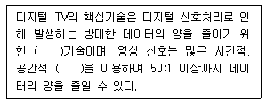
- 억압, 단일성
- 압축, 단일성
- 생략, 유연성
- 압축, 중복성
(정답률: 알수없음)
57. ATM(Asynchronous Transfer mode)특징 중에서 틀린 것은?
- 장거리 전송에 알맞다.
- 고속 전송이다.
- Video File 전송에 적합하다.
- 연결할 수 있는 장치수량은 최대 126대로 제한된다.
(정답률: 알수없음)
58. 인간의 시각과 청각을 나타내는 미디어를 무엇이라고 하는가?
- 전송 미디어
- 지각 미디어
- 표현 미디어
- 저장 미디어
(정답률: 알수없음)
59. 다음 중 멀티미디어의 종류와 거리가 먼 것은?
- 미래형 전자신문
- 쌍방향 TV
- VOD
- 전화 회의
(정답률: 알수없음)
60. 다음 조명의 종류 중 피사체 윤곽을 뚜렷하게 하며 신비적인 엄숙함 등을 표현하는데 많이 사용되는 것은?
- 순광
- 측광
- 역광
- Under Lighting
(정답률: 알수없음)
4과목: 방송통신 시스템
61. 위성 방송의 하향 링크 설계에 고려하지 않는 것은?
- 지구국 EIRP(실효등방성 복사전력)
- 자유공간 손실
- 지구국 수신기 잡음온도
- 위성 중계기 안테나 이득
(정답률: 알수없음)
62. TV 신호의 수신을 위해서는 송신측의 주사와 수신측의 주사를 올바르게 맞추어야 한다. 이를 위해 필요한 신호는?
- 변조신호
- 복조신호
- 동기 신호
- 반송파 신호
(정답률: 알수없음)
63. FM에서 S/N비를 향상시키기 위한 방법과 거리가 먼 것은?
- 변조지수를 크게 한다.
- 주파수 대역폭을 크게 한다.
- 반송파의 주파수를 크게 한다.
- 프리엠파시스를 쓴다.
(정답률: 알수없음)
64. 중계시스템은 송수신 중계를 위한 중계차와 제작을 위한 중계차로 구분된다. 다음 중 현재 사용 가능한 송수신 중계시스템의 방식이 아닌 것은?
- Twist pair 전송방식
- 마이크로웨이브 전송방식
- SNG(satellite news gathering)전송방식
- 광케이블 전송방식
(정답률: 알수없음)
65. 케이블 TV 유선방송 시스템의 동축케이블을 포설 할 때 주의사항과 관계 없는 것은?
- 동축케이블을 포설시에는 견고하고 풍압을 견딜 수 있게 설치하여야 한다.
- 동축케이블을 포설 할 때 케이블의 비틀림과 직각 굴곡은 관계가 없다.
- 동축케이블에 차량이나 수레가 지나가지 않도록 하여야 한다.
- 동축 케이블 접속시에 물이나 습기가 들어가지 않도록 하여야 한다.
(정답률: 알수없음)
66. VHF/UHF 대역 방송신호의 수신 전계강도를 결정하는 요소가 아닌 것은?
- 주파수
- 송수신 안테나 높이
- 전송로 길이(또는 수신지역 특성)
- 전리층의 특성
(정답률: 알수없음)
67. 방송통신 시스템의 디지털화의 특징과 거리가 먼 것은?
- 방송의 고품질 서비스가 가능하다.
- 다양한 보조 정보를 이용한 부가 서비스를 실시할 수 있다.
- 시스템이 복잡하므로 운용과 보수에 비용과 시간이 많이든다.
- 시스템의 시간에 따른 열화가 적고 안전성, 신뢰성이 우수하다.
(정답률: 알수없음)
68. 다음 중 OFDM(Orthogonal Frequency Division Multiplexing)과 관련이 적은 것은?
- 다수의 반송파를 사용하는 변복조 기술이다.
- 페이딩 현상에 별로 민감하지 않다.
- 상호변조 현상이 별로 발생하지 않는다.
- FFT(Fast Fourier Transform)기술로 변복조가 가능하다.
(정답률: 알수없음)
69. 위성방송의 특징이 아닌 것은?
- 위성으로부터 직접 전파를 송신하기 때문에 화질의 열화가 적다.
- 산간벽지, 외딴 섬 등에서도 선명한 방송의 수신이 가능하다.
- 위성을 중계매체로 하기 때문에 비상시 전국적인 방송은 어렵다.
- 비교적 FM 수준의 양호한 품질로 수신이 가능하다.
(정답률: 알수없음)
70. 종합유선방송국 설비에 해당하지 않는 것은?
- 가입자 관리 설비
- 송출 설비
- 수신 설비
- 간선
(정답률: 알수없음)
71. DSB(Double Side Band) 통신방식과 비교할 때 SSB의 장점이 아닌 것은?
- 점유주파수 대역이 1/2로 축소된다.
- 적은 송신전력으로 통신이 가능하다.
- 신호 대 잡음비가 개선된다.
- 송수신기의 회로구성이 간단하여 가격이 저렴하다.
(정답률: 알수없음)
72. 다음 중 반사가 이론상 가장 적은 경우의 정재파비(VSWR) 값은?
- 0.5
- 1
- 1.5
- 2
(정답률: 알수없음)
73. 정규 방송 시간 전에 전송로의 직진성과 레벨을 확인하기 위해 송출하는 Test Pattern은?
- Sign파
- Tone
- Color Bar
- Multi-Burst Signal
(정답률: 알수없음)
74. 다음 중 AM에 비해서 FM방송통신 방식의 특징이 아닌 것은?
- 신호대 잡음비가 개선된다.
- 음질이 좋아진다.
- 점유주파수 대역이 넓어진다.
- 페이딩의 영향을 많이 받는다.
(정답률: 알수없음)
75. 디지털 유선방송국 설비조건 중에서 전송방식으로 알맞은 것은?
- 32QAM, 64QAM
- 64QAM, 256QAM
- 128QAM
- 512QAM
(정답률: 알수없음)
76. 무궁화 위성 1, 2호의 방송에 대한 설명으로 틀린 것은?
- 이동위성이다.
- 동경 116虔에 위치하고 있다.
- 방송용 주파수 대역폭은 27MHz이다.
- Ku 밴드를 사용한다.
(정답률: 알수없음)
77. 디지털 오디오 방송에서 유럽식 디지털 오디오 방송표준인 유레카 147(EUREKA-147)의 점유 대역폭은?
- 0.536 MHz
- 1.536 MHz
- 2.536 MHz
- 3.536 MHz
(정답률: 알수없음)
78. 방송중계회선의 임피던스는?
- 50Ω
- 75Ω
- 300Ω
- 600Ω
(정답률: 알수없음)
79. 다음 중 디지털지상파에 의한 HDTV방송과 가장 상반된 개념은?
- 화질과 음질의 향상
- 다채널화
- 다양한 부가서비스
- 영상과 오디오의 압축
(정답률: 알수없음)
80. 방송통신망의 종류가 아닌 것은?
- 무선전송방식
- 유선전송방식
- 위성전송방식
- 수중전송방식
(정답률: 알수없음)
5과목: 전자계산기 일반 및 방송설비기준
81. 유선방송국설비를 매월 방송신호를 측정· 시험하여 그 결과를 기록· 관리하여야 하는 것들 중에서 음악유선방송인 경우에 제외되는 것은?
- 반송파의 주파수 편차
- 반송파 신호레벨
- 스퓨리어스
- 반송파대 잡음비
(정답률: 알수없음)
82. 병렬컴퓨터의 분류에서, 여러 개의 프로세서가 하나의 제어장치로부터 단일 명령어를 받지만, 처리되는 데이터는 서로 다른 프로세서에서 이루어지는 구조는?
- SIMD
- SISD
- MISD
- MIMD
(정답률: 알수없음)
83. 다음 중 무선국의 허가증에 기재할 사항이 아닌 것은?
- 허가연월일 및 허가번호
- 시설자의 성명 또는 명칭
- 전파의 형식· 점유주파수대폭 및 주파수
- 무선종사자의 성명과 인적사항
(정답률: 알수없음)
84. 다음 중 정보통신공사업법에서 말하는 공사의 종류 중 통신설비공사가 아닌 것은?
- 전송설비공사
- 구내통신설비공사
- 위성통신설비공사
- 방송전송· 선로설비공사
(정답률: 알수없음)
85. 데이터버스가 16비트이고 주소 버스가 20비트인 마이크로 컴퓨터의 최대 주기억 용량은 얼마인가?
- 256K bytes
- 64K bytes
- 2M bytes
- 1M bytes
(정답률: 알수없음)
86. "CPU 레지스터, 캐쉬기억장치, 주기억장치, 보조기억장치"로 기억장치의 계층구조 요소를 구성하고 있다. 이들 중에서 처리속도가 가장 빠른 것과 가장 느린 것으로 짝을 지은 것은?
- 캐쉬기억장치 - 주기억장치
- CPU 레지스터 - 캐쉬기억장치
- 주기억장치 - 보조기억장치
- CPU 레지스터 - 보조기억장치
(정답률: 알수없음)
87. 코드의 기능이 아닌 것은?
- 분류기능
- 식별기능
- 관리기능
- 순차기능
(정답률: 알수없음)
88. 다음 중 단파방송용 무선설비 기술기준은 어느 방송매체를 기준으로 준용하는가?
- AM방송
- FM방송
- 텔레비전방송
- 스테레오포닉방송
(정답률: 알수없음)
89. 다음 중 방송사업자가 변경하고자 할때 변경허가, 승인, 등록, 추천사항이 아닌 것은?
- 당해 법인의 합병
- 방송구역의 변경
- 대표자의 변경
- 방송분야의 변경
(정답률: 알수없음)
90. 메모리로부터 읽은 워드(word)가 오퍼랜드(operand) 자체일 경우 컴퓨터 사이클은?
- 실행 사이클
- Fetch 사이클
- 간접 사이클
- 인터럽트 사이클
(정답률: 알수없음)
91. 현 상태에서 다음 상태로 코드의 그룹이 변화할 때 단지 하나의 비트만이 변화되는 최소 변화 코드의 일종이며, 또한 비트의 위치가 특별한 가중치를 갖지 않는 비가중치 코드로서 산술 연산에는 부적합하고 입출력 장치와 A/D 변환기와 같은 응용장치에 많이 사용하는 코드 체계는?
- 3초과 코드(Excess-3 code)
- 8421 코드(8421 code)
- 그레이 코드(Gray code)
- 해밍 코드(Hamming code)
(정답률: 알수없음)
92. "방송의 공적 책임에서 갈등을 조장하여서는 아니된다."의 조항에서 다음 사항 중 가장 관계가 먼 것은?
- 지역간
- 세대간
- 기술간
- 성별간
(정답률: 알수없음)
93. 다음 중 인공위성의 무선국을 이용하여 행하는 방송은?
- 지상파 방송
- 종합유선방송
- 무선방송
- 위성방송
(정답률: 알수없음)
94. 다음 중에서 두 숫자(혹은 문자)를 비교하는데 주로 사용되는 논리연산은 어느 것인가?
- AND GATE
- OR GATE
- NAND GATE
- EXCLUSIVE GATE
(정답률: 알수없음)
95. 2의 보수로 나타낸 수에서 (-17)+(-4)의 계산결과는?
- 10010101
- 11101011
- 11110011
- 10011011
(정답률: 알수없음)
96. 현재 사용되고 있는 모든 기억 장소를 주기억 장치의 한쪽 끝으로 옮기는 작업을 운영 체제에서는 무엇이라고 하는가?
- Placement 전략
- Compaction 전략
- Fetch 전략
- Replacement 전략
(정답률: 알수없음)
97. 블랭킷 에어리어라 함은 방송국의 송신공중선으로부터 발사되는 강한 ( )로 인하여 다른 ( )와의 간섭이 일어나는 지역을 말한다. ( )안에 순서대로 옳게 나열된 것은?
- 전파, 전파
- 전계, 전파
- 전자파, 전계
- 자계, 전파
(정답률: 알수없음)
98. 다음 중 Floating Point 표현의 수들 사이의 곱셈 알고리즘 과정에 해당되지 않는 것은?
- 가수를 곱한다.
- 결과를 정규화 시킨다.
- 가수의 위치를 조정한다.
- 0 인지의 여부를 조사한다.
(정답률: 알수없음)
99. 공사업자외의 자가 시공할 수 있는 경미한 공사의 범위가 아닌 것은?
- 간이무선국·아마추어국 및 실험국의 무선설비공사
- 연면적 1000m2 이하의 건축물의 자가유선방송설비·구내방송설비 및 폐쇄회로 텔레비전의 설비공사
- 인입되는 국선이 10회선 이하인 건축물의 구내통신선로 설비공사
- 군 및 경찰의 긴급작전을 위한 공사로서 정보통신부장관이 관계중앙행정기관의 장과 협의하여 정하는 공사
(정답률: 알수없음)
100. 국내 FM 스테레오 방송의 허가 대역폭은？
- 110kHz
- 180kHz
- 206kHz
- 230kHz
(정답률: 알수없음)